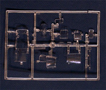
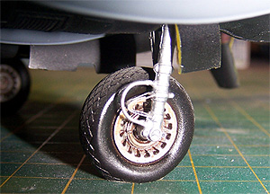

|

Revell-Monogram 1/48 P-61 "Black Widow"
Kit #85-7546
Collector's Market Value $10.00
Images and text Copyright � 2007 by Matt Swan
Developmental Background
The British had been developing Radio Detection and Ranging or RADAR since 1936 and it was playing an important role in the defense of the small island nation. Unfortunately while effective it was too large and heavy to mount in an aircraft requiring that a land based operator attempt to guide night interceptors onto their targets. By late 1940 there was a breakthrough in electronics that allowed for a much more compact, completely self contained detection unit that could be housed in a medium sized aircraft and at last Airborne Interception (AI) was possible. Just what does any of this have to do with the P-61? The P-61 "Black Widow" was the first aircraft specifically designed from its inception to carry the AI RADAR equipment and this task was accomplished by Jack Northrop.
In response to basic requirements and specifications handed down by the Emmons Board Northrop developed a large twin engine, twin boomed aircraft to house the AI unit in the nose. The design included two Pratt & Whitney R2800-10 Double Wasp 18-cylinder radials, producing 2,000 horsepower and required a crew of three, a pilot, a RADAR operator sitting in the rear compartment and a gunner. The crew, the radar equipment and a large armament package were all housed in a central pod slung between the booms. The aircraft also featured a large four gun upper turret which presented buffeting problems when rotated. Generally this unit was locked in a forward aimed position and on some aircraft was deleted completely. With this modification the crew could be reduced to two.
One weakness of the P-61 was the complete separation of the pilot from the radar operator linked only by an intercom. Should this intercom fail (which it did often) the radar operator became isolated and the aircraft was no longer effective as an interceptor. Since the gunner's seat was now empty behind the pilot the radar operator moved forward which achieved two results. First he was no longer isolated from the pilot and second this changed the center of balance of the aircraft resulting in improved performance.
The P-61 "Black Widow" operated with distinction in both the Pacific and the European theaters. P-61s performed ground assault missions during the Battle of the Bulge destroying German trucks and munitions trains, in January 1945 during the Great Raid when US Rangers rescued Allied prisoners from Japanese camps in the Philippines an aircraft preformed aerobatics at a critical moment to distract Japanese guards - it was a P-61. It is often credited with taking the last kill of the war but this is incorrect as the last kill was taken by a B-32 "Hobo Queen Two." After the war a few surviving P-61s took part in the Thunderstorm Project studying the formation and dynamics of thunderstorms. The type was further developed into the F-15A Reporter as a high speed photo reconnaissance aircraft that performed service during the Korean Conflict. The last flying variant was an F-15 converted to a fire bomber which was destroyed in an accident in 1968. Today there are four surviving P-61s, none of which are in flyable condition. The Mid Atlantic Air Museum in Reading Pa. is restoring one example to flying condition but this project still has years ahead of it. The other three are located in Beijing, NMUSAF in Dayton Ohio, and the Udvar Hazy center in D.C.
The Kit
There are several model kits of the P-61 in various scales but in 1/48 the only game in town is the Monogram kit. This is definitely one of the classics from this company as well; the kit features raised panel lines and rivet detail as was commonly found on kits produced in the 1970s. All the parts for this kit are cast in a hard gloss black polystyrene with very little flash and a few sink marks on thicker pieces like the engine faces. While we are on the subject of engines, this kit has dissimilar engines. One is just an engine face while the other is a more complete engine with open service panels in the cowling. This one also has an open service panel in the boom. This is intended to allow for a small display diorama showing an engine being serviced. The modeler can close these panels if so desired. Access ports to some of the cannons can be displayed open also. The kit includes several ground crew figures which are very useful in many different diorama applications.
The nose wheel wells is well detailed with the nose bay having the correct crew access openings, the main gear bays should be close on the B version as the main doors were cyclic on this aircraft. The front and rear crew compartments are also well done with adequate fine detail for the average modeler. Most parts fit together fairly well but there are a few fit issues around the booms to the wing lower trailing edge. The kit includes a medium sized sprue of clear parts that allows for the front canopy to be built with all hatches open and the upper access port to the aft compartment open. The clear parts display crisp raised frame lines and show good clarity. Sadly there are a few fit issues here as the forward area of the windscreen does not mate well to the fuselage and seems just slightly small. The aft compartment glazing is also a loose fit. Included here is a single clear strut to keep the kits rear end off the ground as this thing is a serious tail sitter.
This model is so tail heavy that when I built my first example I had to pack as much pressed lead shot and clay as possible between the forward cabin floor and the upper nose gear bulkhead. I also had to pack additional weight between the front of the crew compartment and the nose radar aft bulkhead. This was not enough, I also had to load lead into the wing leading edge, into the engine faces and into the body of the center pod forward of the center of gravity before the nose would stay on the ground. Another alternative is to contact Terry Dean who is the king of nose weights. He makes a weight specifically designed for this model and is an avid fan of the P-61. The P-61 weight drops into the radome,(either the "A" or "B" version) and is held in place with a few drops of CA. The only downside to using the weight is that the radar detail provided in the kit cannot be used.
Other options included with the kit are two nose cones for an A or a B model. Unfortunately the nose cones are molded in black plastic rather than the clear plastic they should have been done in. We get four extended range drop tanks but no bombs. P-61s did occasionally carry a pair of 500 pound bombs on the outside hardpoints. The radar equipment is well represented and the modeler could leave the nose cone off to display this. The nose gear is steerable and can be positioned after assembly. The upper turret is movable along two axis or can be replaced with a flat cover panel. The flaps can be installed full up or full down. Ailerons, rudders and elevator are all molded in place as neutral. This kit consists of six sprues shot in gloss black high pressure polystyrene covering 117 parts. In addition the clear parts sprue contains nine pieces for a total of 126 pieces in the box.

You may click on these small images to view larger pictures
Decals and Instructions
The most recent release of this kit included instructions in a large booklet format consisting of eight A-4 sized pages. They open with a decent historical background of the aircraft type along with a basic color chart that offers paint colors by name only with no FS numbers or paint manufacture codes. The next six pages contain twenty seven exploded view construction steps that all include plenty of assembly tips and painting suggestions. The last page covers exterior painting and decal placement for a single OD aircraft and one all black aircraft.
Over the years I have had three different examples of this kit all from differing release dates, the most recent being 2004. All have had the same decals and all the decals have been brittle, prone to silvering and difficult to work with (maybe I have bad luck with this kit). You may click on the small image to the right to view a full sized scan of the decal sheet. The sheet includes general markings for two aircraft and nice looking nose art. We get a good assortment of service stencils and warning markings. The classic red walkway markings are provided as a series of decals but better results can be obtained by masking the area and just painting them in - not a difficult proposition. The decals also include a collection of Curtiss Electric markings for the propellers. They sure look nice on the sheet but you'll need some mood adjustment to apply them.
Accessories
This kit has been kicking around the modeling world for more than a few years now and as a result there are quite a few aftermarket sets available. Before I launch into this I want to talk briefly about AM Tech and their foray into the Black Widow adventure. Sometime around 2003 AM Tech announced they would be doing an all new mold of the P-61 in three basic versions, the A, B and C along with an XP-61 and a F-15A Reporter version. This announcement surely rocked the modeling world. In-house development began quickly and by time of the 2004 Nats in Chicago they had a prototype ready for display to the public. During a brief moment of inattentiveness during the show the one and only prototype model was stolen never to be recovered. Soon afterwards health issues began to take their toll on the owner and by the end of 2006 AM Tech had folded along with all plans for a new kit. Sadly there were not even masters created yet so very little existed that another company could pick up and run with.
Back to the kit at hand, it can be built right out of the box into a very nice model but if suffer from AMS as I do and so many other modelers do then you can satisfy these urges with aftermarket. First we have two very nice detail sets from Eduard out of the Czech Republic. Eduard set 48382 is an interior set that covers the front cockpit in some detail. It includes acetate instruments under a photo etched bezel plate, new side panels and plenty of little levers to make your eyes lose focus. It also includes a great couple pieces for the lower aft access hatch for the radar operator. The second Eduard set, #48383 is an exterior set which includes photo etched material for inside the gear bays, engine bulkheads and wiring harnesses, wheel covers and some flight control details. Eduard also offers a laser cut mask set for the canopy.
Next up is Engines and Things, they offer several different models of the Pratt and Whitney R-2800 engine used by various versions of the P-61. My previous experience with Engines and Things has not been very good. From what I've seen of their stuff the castings are crude with lots of flash, plenty of air bubbles and soft detail. I think presented with a choice between the original kit engines and the Engines and Things replacements I will stick with the kit offerings. Quick Boost and Verlinden both offer replacement engines that are well worth considering. The Verlinden engines are simply improved resin replacements for the kit engines with photo etched wiring harnesses. The Quick Boost pieces are by far the best engine sets out there and include replacement forward cowlings with exhaust manifolds cast in place – very nice stuff here.

Easy Mask offers a mask set for the kit and True Details offers some replacement wheels for the A, B and C models. These wheels are weighted and make for a very nice upgrade to the basic kit wheels. Meteor Productions under the Cutting Edge name-tag has a couple of wheel mask sets and invasion strip mask sets for this kit. They also offer a set of replacement engine cowlings and boom mounts. Under the Pyn-Up logo they have a very sexy set of decals for the P-61, Black Widow Babes Nr.1: P-61A-1-NO, 421 NFS , Skippy/Nocturnal Nemesis, 42-5502 , David Cort; P-61B-1-NO, 548 NFS, Cooper's Snooper, 42-39454, Lt George C. Cooper, Iwo Jima, April 1945 that make for a huge improvement over the kit decals. AeroMaster did a sheet of decals that covered P-61 Black Widows 548 NFS 42-5610 "Midnite Madness", Le Shima 1945; 42-39454 and "Cooper's Snooper" Iwo Jima 1945; 42-39405 "The Spook/Anonymous III". all overall black. SuperScale did two different sets some time ago, both long out of production but occasionally you can find them. Those are 48-469 Sleepy Time Gal and Husslin Hussy and sheet 48-470 Midnight Belle and Nightie Mission.
There are two last packages to discuss concerning this kit and those are the P-61C and F-15A Reporter conversions from Lone Star Models. Now these may seem somewhat pricey conversion sets at about $40.00 each, especially considering you are working with a $10.00 base kit but it allows you to build some very different P-61 models. First, set #LSM0188 includes the correct P-61C engine cowlings and boom mounts along with replacement engine faces, spinners and oil coolers. Set #LSM0141 contains all the goodies from the P-61C set along with a new vacuform crew pod for the F-15A Reporter, a new vacuformed single piece canopy with core in case you need to make additional sets, new cockpit including sidewalls, seats and nose gear bay. It also includes new propeller blades. The set includes the camera nose for the Korean War era birds as well. You can click on the image at left to view a larger picture of these parts. The Reporter set also includes a ten page set of instructions showing sketches of the F-15 interior As well as fairly comprehensive instructions for making the conversion. The resin pieces in these sets are quite nice with few bubbles and light flash. The vacuformed pod pieces are of equal size and mate up well but the engraved panel lines are soft and inconsistent. I found I needed to run over them with a scribe but this was no large task.
The aftermarket industry is not static and since I wrote this several new things have been introduced. For additional reading on P-61 accessories I suggest you see the Hampton Roads P-61 accessories review.
Conclusions
This is definitely a classic kit that is sure to be around for many years to come. At the time of this writing the kit is not in production but as with any successful Revell-Monogram kit it is certain to be on the re-release schedule several times in the future. The kit fits together fairly well with only a few issues, most of which can be fixed with a little putty. The biggest downfall of this kit, besides the decals, is the raised surface detail that takes a considerable amount of work to scribe if you are inclined to that stuff. Accuracy wise the kit is a hodge-podge of A, B and C models all rolled into one- -not accurate for any variant. Clear parts: The fit here is, to put it bluntly, lousy. The main canopy needs the sills built up (use 1/16th and 1/32nd styrene strips for this). The two vertical windows in the RO's compartment are sometimes short-shots. I've found that the later the issue of the kit, the better the chances of these two windows being short-shots. There's a nice selection of aftermarket goodies to help dress it up and a couple good decal sets floating around still. With the addition of the Lone Star detail sets you can build some very different models that are sure to be eye-catchers. There are a number of good reference books available, also. I would recommend any one of them, Squadron Signals "P-61 In Action", Warbird Tech's "P-61", Osprey's "P-61 Units" and if you can find it Jeff Koln's "421st NFS History." Jeff is currently attempting to get his second book on the P-61 published. It's not titled yet but, it contains the history of every P-61/F-15A built. I give this kit a good/fair recommendation and feel every WW2 aircraft enthusiast should have at least one in their collection.
I would like to thank Terry Dean for his assistance with this review.
|
|


{kind=link}
{kind=link}
{kind=link}
{kind=link}
{kind=link}
{kind=link}